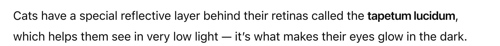
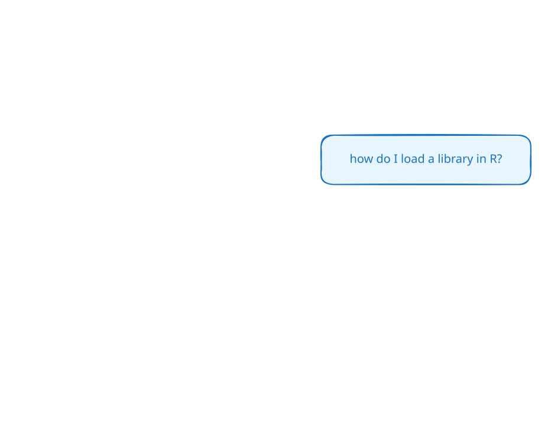
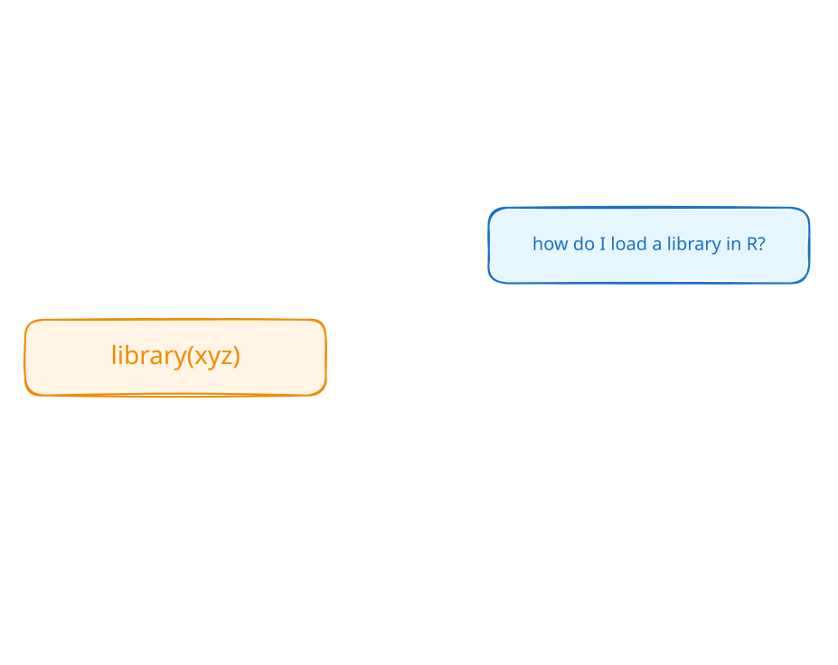
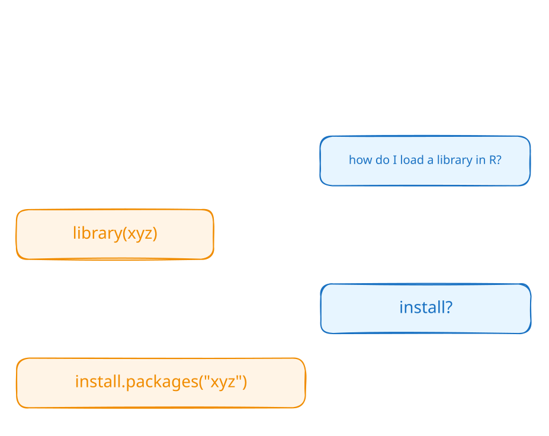
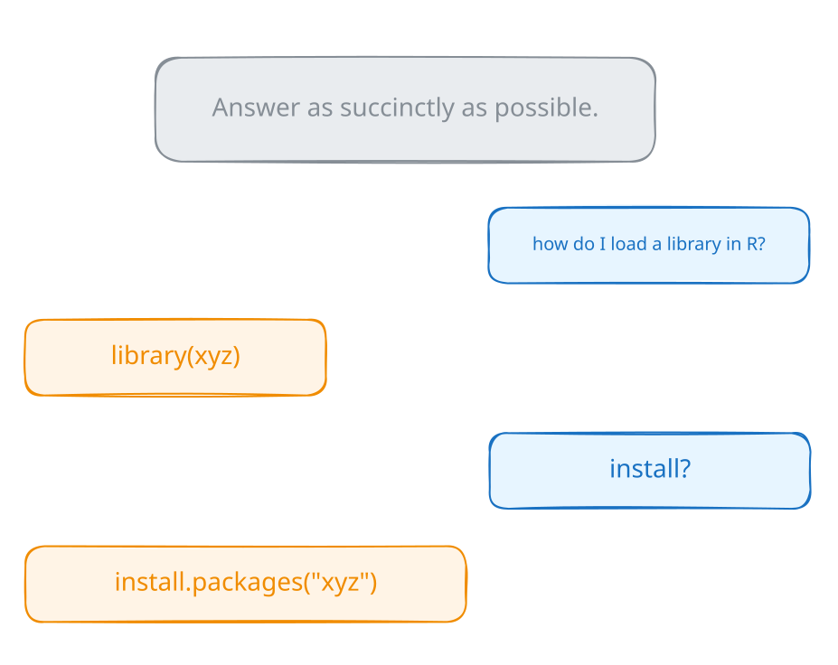
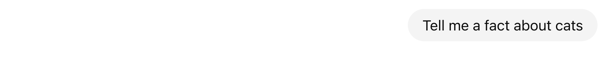
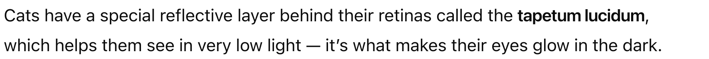
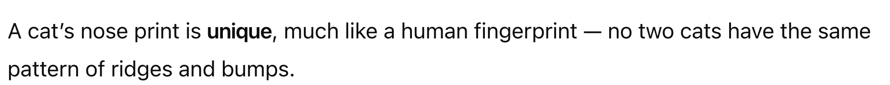

Anatomy of a conversation
LLMs for Data Analysis in R
Anatomy of a Conversation
Photo by Jaroslaw Glogowski on Unsplash


We can do this from R!

How does this work?
Most LLMs are accessible through HTTP APIs
<Chat Anthropic/claude-sonnet-4-5 turns=2 input=15 output=37 cost=$0.00>
── user ─────────────────────────────────────────────────────────────────────────────────
Tell me a quick fact about sheep.
── assistant [input=15 output=37 cost=$0.00] ────────────────────────────────────────────
Sheep have rectangular pupils that give them a nearly 360-degree field of vision, allowing them to see predators approaching from almost any direction without turning their heads.Messages have roles.




Message roles
| Role | Description |
|---|---|
system_prompt |
Instructions from the developer (i.e., you) to set the behavior of the assistant |
user |
Messages from the person interacting with the assistant |
assistant |
The AI model’s responses to the user |
<Chat Anthropic/claude-sonnet-4-5 turns=3 input=17 output=23 cost=$0.00>
── system ───────────────────────────────────────────────────────────────────────────────
Always answer in haikus.
── user ─────────────────────────────────────────────────────────────────────────────────
what is chirality
── assistant [input=17 output=23 cost=$0.00] ────────────────────────────────────────────
Molecules can twist,
Left hand, right hand—mirror forms,
Same but different.Your Turn 02_conversation
Set up a
chatwith a system prompt instructing the model to answer briefly.Ask: What ellmer function tells me what Anthropic models are available?
Ask: What about OpenAI models?
Create a new
chatwith no system prompt and ask the second question again.How do the answers to 3 and 4 differ? Think about both the content and the style.
05:00
Demo: clearbot
👩💻 _demos/01_clearbot/app.py



Is this actually a conversation?
Photo by Marija Zaric on Unsplash
LLMs are stateless
The LLM doesn’t remember anything between requests
You have to send the entire conversation history with every message
The LLM reconstructs the “conversation” from what you send
How LLMs work (briefly)
Photo by Andy Kelly on Unsplash
How do LLMs understand?
If you read everything
ever written…
Books and stories
Websites and articles
Poems and jokes
Questions and answers
…then you could…
- Answer questions
- Write stories
- Tell jokes
- Explain things
- Translate into any language
How do LLMs respond?
LLMs think in tokens
- Fundamental units of information for LLMs
- Words, parts of words, or individual characters
- “hello” → 1 token
- “unconventional” → 3 tokens:
un|con|ventional
- Important for:
- Model input/output limits
- API pricing is usually by token
- Not just words, but images can be tokenized too
Demo:
token-possibilities
👩💻 _demos/02_token-possibilities/app.R
How to think about LLMs
Think Empirically, Not Theoretically
It’s okay to (mostly) treat LLMs as black boxes.
Just try it! When wondering if an LLM can do something,
experiment rather than theorizeYou might think they could not possibly do things
that they clearly can do todayAnd you might think surely they can do something
that it turns out they’re terrible at

LLMs are jagged

Embrace the Experimental Process
Photo by National Cancer Institute on Unsplash
Embrace the Experimental Process
Explore!
Focus on learning and engaging with the technology, not outcomesFailure is valuable!
those are some of the most interesting conversations that we haveIt doesn’t have to be a success.
Attempts that don’t work still provide insights
What if I want to keep chatting back-and-forth?
ellmer can do that, too!
| Console | Browser | |
|---|---|---|
|
live_console(chat) |
live_browser(chat) |
Demo:
live
👩💻 _demos/03_live/03_live.R